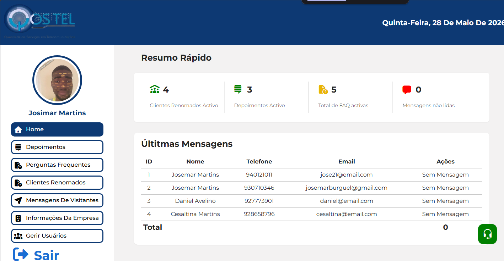
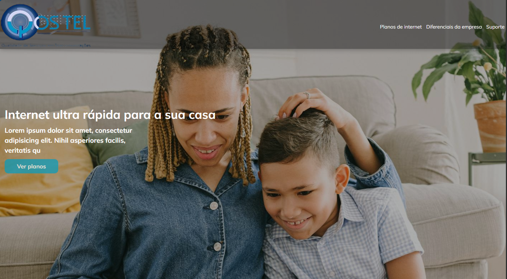
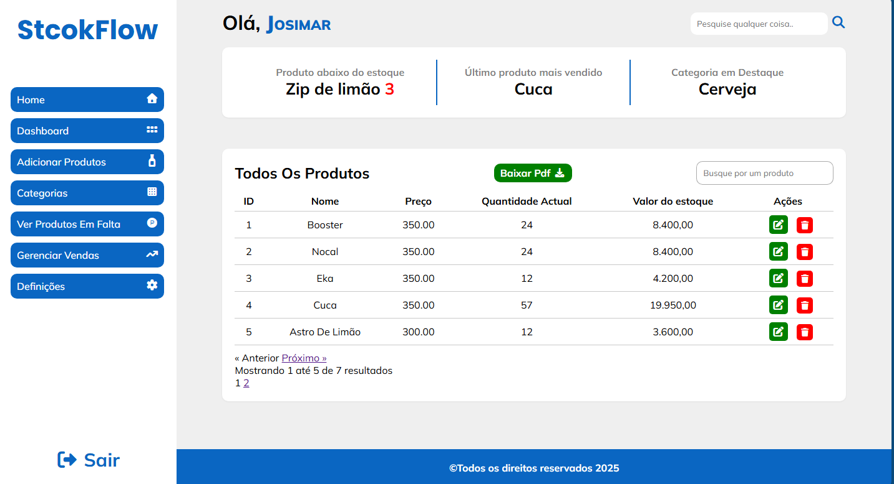
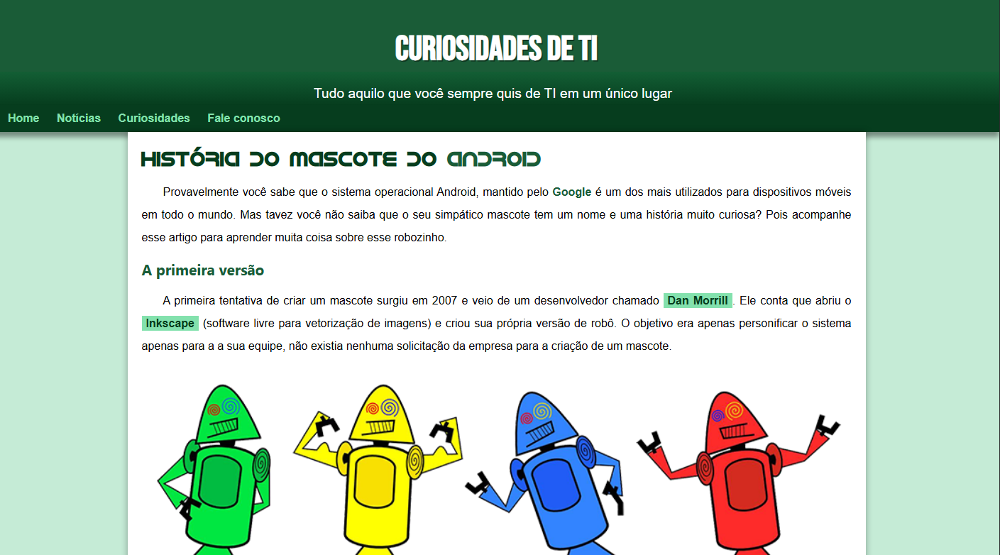
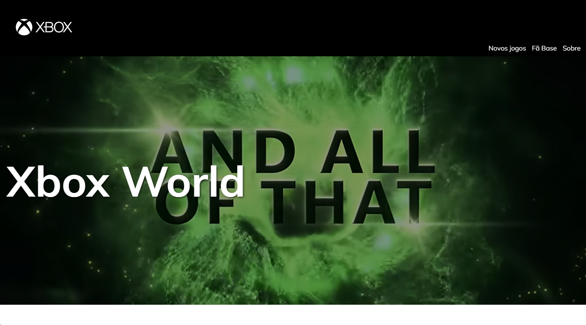

Josimar Martins
Desenvolvedor backend e solucionador de problemas
Sobre mim
Sou formado em Técnico Médio de Informática, com experiência em redes de computadores e desenvolvimento de software. Possuo experiência na instalação e manutenção de infraestruturas de rede em ambientes residenciais e empresariais, incluindo organizações de grande dimensão como a Lilás e o Shopping Hoji Ya Henda, além da configuração de antenas de rede (Tenda e MikroTik) e roteadores de diversas marcas....
Atualmente, realizo um estágio remoto em desenvolvimento de software na Eclipse Solutions, onde venho aprofundando os meus conhecimentos na área de programação e engenharia de software. Possuo também experiência no desenvolvimento web, incluindo a criação de websites para ISP e sistemas de gestão para pequenos negócios, como uma solução de gestão de estoque para bares.
- Nome: Josimar Martins
- Idade:
- Experiência: 9 mêses
- Tel: +244 940 121 011
- Facebook: Josemar da Conceição
- Endereço: Luanda, Camama
- Trabalhar / Prestar Serviço: Disponível
Minhas Skills
Competências técnicas estruturadas por domínio, unindo desenvolvimento web moderno, engenharia backend, ferramentas essenciais de integração e inteligência artificial.
Tecnologias & Frameworks
Linguagens de programação, estilização moderna e bancos de dados
HTML5
Linguagem de marcação para estruturação semântica, acessibilidade e conteúdo de páginas web.
90%Tailwind CSS
Framework CSS utility-first para criação ágil de interfaces responsivas e de alta performance visual.
85%JavaScript
Linguagem de programação essencial para interatividade web dinâmica, manipulação do DOM e integrações.
75%PHP
Linguagem de programação server-side para construção de lógicas de negócio, regras e APIs robustas.
80%Laravel
Framework PHP moderno projetado para simplificar, organizar e acelerar o desenvolvimento de aplicações web e APIs.
60%Ferramentas & Inteligência Artificial
Controle de versão colaborativo, testes de endpoints de API e técnicas avançadas de IA
Git & GitHub
Sistema de controle de versão distribuído para rastreamento de código, ramificação e colaboração contínua.
65%Postman
Ferramenta líder para desenvolvimento, testes de requisições HTTP, validação e documentação de APIs RESTful.
75%Carreira
Trajectória Profissional
Desenvolvedor Backend
Actuo como desenvolvedor backend na Eclipse Solutions
Técnico de Redes
Actuei como técnico de redes de computadores na QoS Tel, onde fui responsável pela instalação, configuração e manutenção de dispositivos de redes de computadores
Trajectória Académica
Técnico de Informática
Sou formado em técnico médio de informática pelo Colégio Mundo Novo, onde construi uma base sólida em computação
Projectos

QoS Tel CMS
Descrição
CMS para gerênciamento de conteúdo do site da QoS Tel, desenvolvido utilizando PHP (Laravel) e MySQL. Ele permite que os administradores do site criem, editem e excluam páginas, posts e outros tipos de conteúdo de forma fácil e intuitiva.

QoS Tel Landing Page
Descrição
Landing Page desenvolvida para a QoS Tel. Ela é totalmente responsiva e otimizada para ser executada em qualquer dispositivo com um navegador web.

StockFlow
Descrição
Projecto de gestão de estoque de um bar voltado para venda de bebidas alcoólicas, refrigerantes, canabis entre outros.
ViajaMais
Descrição
Site de destinos de viagens, criei com o intuito de testar aplicar os conceitos de responsividade e animações com CSS puro.

Projecto android
Descrição
Página desenvolvida durante o último capítulo do modúlo 2 do curso de HTML5 e CSS3 do Curso em Video.

Xbox
Descrição
Web Site desenvolvido para mostrar a evolução do Xbox nestes mais 20 anos do console e serviu também para mim treinar flex box e animações com o CSS.